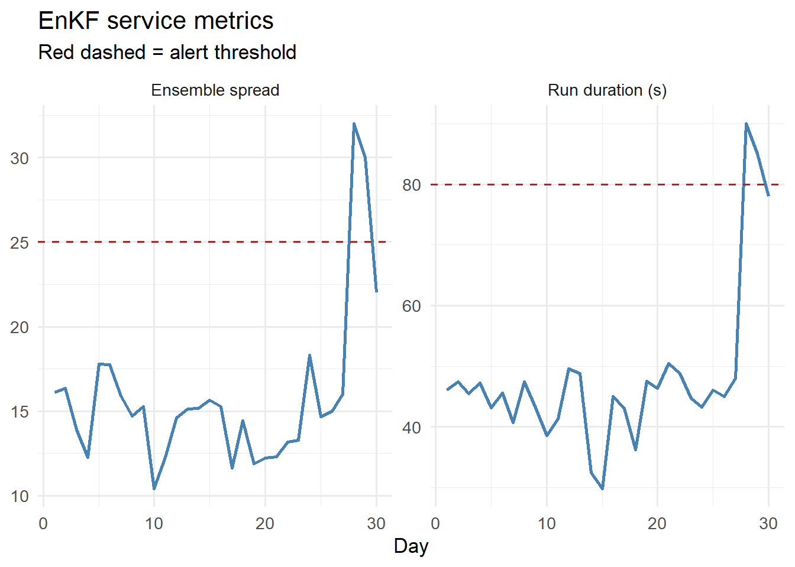

# Minimal structured logger using base R
log_event <- function(level, message, ...) {
extras <- list(...)
entry <- c(
list(timestamp = format(Sys.time(), "%Y-%m-%dT%H:%M:%SZ"),
level = toupper(level),
message = message),
extras
)
# Compact JSON-like output
parts <- mapply(function(k, v) paste0('"', k, '":"', v, '"'),
names(entry), entry)
cat("{", paste(parts, collapse = ", "), "}\n")
}
log_info <- function(msg, ...) log_event("info", msg, ...)
log_warn <- function(msg, ...) log_event("warning", msg, ...)
log_error <- function(msg, ...) log_event("error", msg, ...)Observability for Digital Twin Services: Logging, Metrics, and Alerting
You cannot fix what you cannot see. Structured logs, health metrics, and automated alerts for a model service that runs overnight. Skill 7 of 20.
business skills
monitoring
logging
observability
operations
1 The 2 AM problem
Your EnKF runner is scheduled for 2 AM. At 6 AM your client’s epidemiologist logs in and the dashboard shows stale data. Was it a database connection failure? A malformed input file? A numerical divergence in the filter? Without structured logs and alerting (1), you are piecing together fragments of information under time pressure.
Observability is the practice of instrumenting your code so that any failure leaves enough information to diagnose and fix the problem without re-running it. The three pillars are: logs (what happened), metrics (how healthy is the system), and alerts (notify when something crosses a threshold).
2 Structured logging in R
Plain cat() output is hard to parse. Structured logs write JSON or key-value lines that can be ingested by log aggregators (CloudWatch, Loki, Datadog).
# EnKF runner instrumented with structured logs
run_enkf_instrumented <- function(obs, location_id) {
log_info("EnKF run started", location = location_id,
n_obs = length(obs))
tryCatch({
# Simulate EnKF (abbreviated)
set.seed(42)
N_ens <- 200
beta_ens <- rnorm(N_ens, 0.3, 0.05)
I_ens <- pmax(1, rnorm(N_ens, tail(obs, 1), 10))
for (t in seq_along(obs)) {
# Update step (simplified)
innov <- obs[t] - mean(I_ens)
K <- cov(I_ens, I_ens) / (var(I_ens) + max(obs[t], 1))
I_ens <- I_ens + K * innov
I_ens <- pmax(0, I_ens)
# Log when something looks suspicious
if (any(!is.finite(I_ens))) {
log_warn("NaN detected in ensemble", step = t,
location = location_id)
I_ens[!is.finite(I_ens)] <- median(I_ens, na.rm = TRUE)
}
}
result <- list(I_median = median(I_ens),
I_lo = quantile(I_ens, 0.025),
I_hi = quantile(I_ens, 0.975),
beta_est = mean(beta_ens))
log_info("EnKF run completed",
location = location_id,
I_median = round(result$I_median, 1),
beta_est = round(result$beta_est, 4))
result
}, error = function(e) {
log_error("EnKF run failed",
location = location_id,
error = conditionMessage(e))
NULL
})
}
# Simulate observations
set.seed(7)
obs_test <- rpois(30, lambda = c(seq(10, 80, length.out = 15),
seq(80, 20, length.out = 15)))
result <- run_enkf_instrumented(obs_test, "district_a"){ "timestamp":"2026-04-22T23:06:35Z", "level":"INFO", "message":"EnKF run started", "location":"district_a", "n_obs":"30" }
{ "timestamp":"2026-04-22T23:06:35Z", "level":"INFO", "message":"EnKF run completed", "location":"district_a", "I_median":"21.1", "beta_est":"0.2986" }3 Health metrics
Beyond logs, expose numeric metrics that can be scraped by monitoring tools like Prometheus. Key metrics for a digital twin service:
# Simulate 30 days of service metrics
set.seed(99)
n_days <- 30
metrics <- data.frame(
day = seq_len(n_days),
run_duration_s = c(rnorm(25, 45, 5), 45, 48, 90, 85, 78), # spike at day 28
ensemble_spread = c(rnorm(25, 15, 2), 15, 16, 32, 30, 22), # matching spike
obs_count = rpois(n_days, 1), # 0 or 1 per day
nans_detected = c(rep(0, 20), 0, 0, 0, 1, 2, 0, 0, 2, 3, 0) # increasing
)
library(ggplot2)
library(tidyr)
metrics_long <- pivot_longer(metrics[, c("day","run_duration_s",
"ensemble_spread")],
-day, names_to = "metric")
ggplot(metrics_long, aes(x = day, y = value)) +
geom_line(colour = "steelblue", linewidth = 1) +
geom_hline(data = data.frame(metric = c("run_duration_s", "ensemble_spread"),
threshold = c(80, 25)),
aes(yintercept = threshold), linetype = "dashed",
colour = "firebrick") +
facet_wrap(~ metric, scales = "free_y",
labeller = as_labeller(c(run_duration_s = "Run duration (s)",
ensemble_spread = "Ensemble spread"))) +
labs(x = "Day", y = NULL,
title = "EnKF service metrics",
subtitle = "Red dashed = alert threshold") +
theme_minimal(base_size = 13)
4 Alert logic
# Rule-based alerting
check_alerts <- function(metrics_row) {
alerts <- character(0)
if (metrics_row$run_duration_s > 80) {
alerts <- c(alerts,
sprintf("Run duration %.0fs exceeds 80s threshold",
metrics_row$run_duration_s))
}
if (metrics_row$ensemble_spread > 25) {
alerts <- c(alerts,
sprintf("Ensemble spread %.1f exceeds 25 threshold",
metrics_row$ensemble_spread))
}
if (metrics_row$obs_count == 0) {
alerts <- c(alerts, "No observations received today")
}
if (metrics_row$nans_detected > 0) {
alerts <- c(alerts,
sprintf("%d NaN values detected in ensemble",
metrics_row$nans_detected))
}
if (length(alerts) == 0) {
cat("Day", metrics_row$day, ": OK\n")
} else {
cat("Day", metrics_row$day, "ALERT(S):\n")
for (a in alerts) cat(" -", a, "\n")
}
}
# Check recent days
for (i in 26:30) check_alerts(metrics[i, ])Day 26 : OK
Day 27 : OK
Day 28 ALERT(S):
- Run duration 90s exceeds 80s threshold
- Ensemble spread 32.0 exceeds 25 threshold
- 2 NaN values detected in ensemble
Day 29 ALERT(S):
- Run duration 85s exceeds 80s threshold
- Ensemble spread 30.0 exceeds 25 threshold
- No observations received today
- 3 NaN values detected in ensemble
Day 30 ALERT(S):
- No observations received today 5 Production monitoring stack
| Component | Tool | Purpose |
|---|---|---|
| Log collector | CloudWatch Logs / Loki | Aggregate structured JSON logs |
| Metrics store | Prometheus | Scrape numeric metrics from /metrics endpoint |
| Dashboards | Grafana | Visualise metric time series |
| Alerts | Alertmanager / PagerDuty | Page you when thresholds breach |
| Uptime | Pingdom / UptimeRobot | Check API /health every 60s |
For FastAPI, add a /metrics endpoint using the prometheus-fastapi-instrumentator Python package — Prometheus scrapes it automatically every 15 seconds.
6 The “on-call” SLA calculation
Sites reliability engineering (1) defines availability as:
\[\text{Availability} = 1 - \frac{\text{downtime}}{\text{total time}}\]
A 99.9% SLA (“three nines”) allows 8.7 hours of downtime per year — roughly one major incident. A 99.5% SLA allows 43.8 hours — one serious incident per month. Know which you are promising and instrument accordingly.
7 References
1.
Beyer B, Jones C, Petoff J, Murphy NR. Site reliability engineering: How google runs production systems. Sebastopol, CA: O’Reilly Media; 2016.